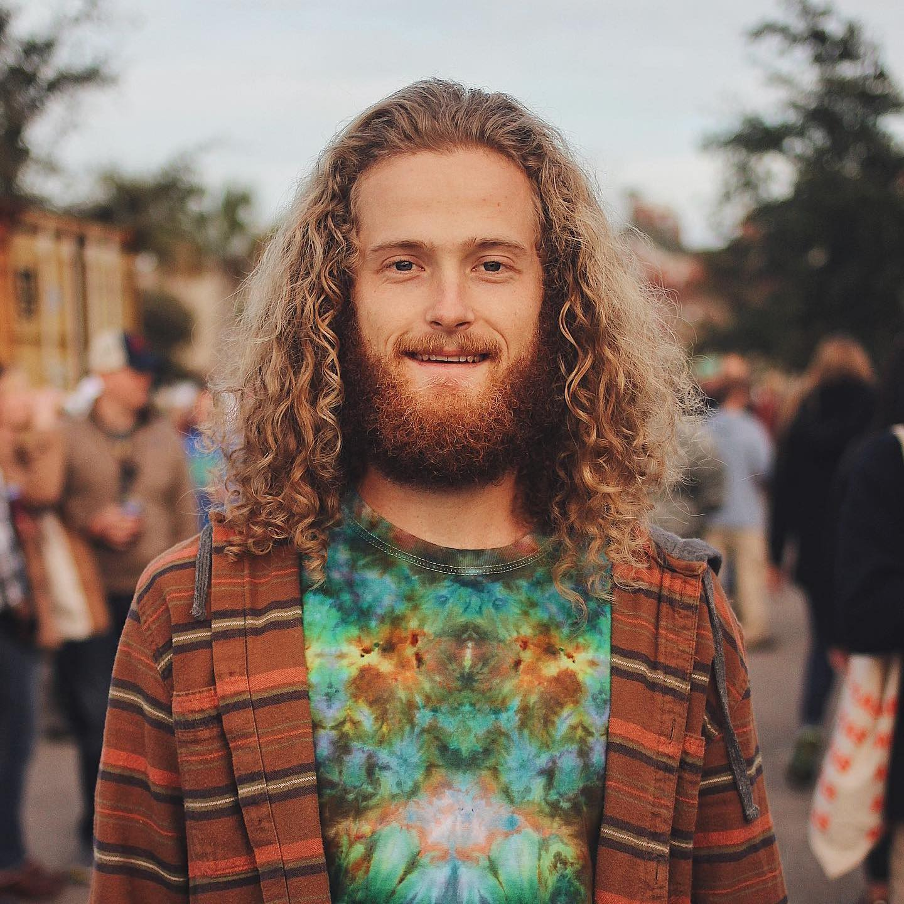
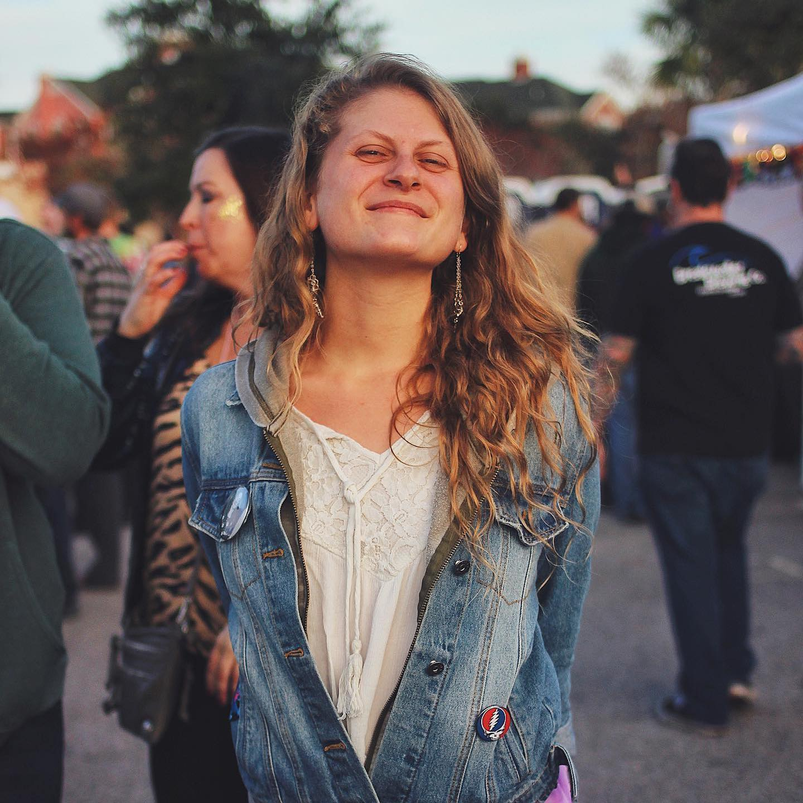

Humans
Blog
Store
About
Humans of Phish
A photojournalism project highlighting the wonderful variety of Humans you might meet at a Phish concert
Follow us on
Instagram
and
Facebook
for the latest updates
Filters
Male
Female
All
"Phish is one element in my life that has grounded, healed, and inspired me since the sweet age of 17."
- @trixystarr
"Music is my memory. When I think of a place or time, I recall it through the music I listened to from that moment."
- @scott_rothenberg
"To me, Phish is a microcosm: something small that embodies the epitome of the cosmos."
- @camber
"I’ve ebbed and flowed year to year from consistently going to shows, but every time I do, it’s a reminder of how beautiful and special Phish is."
- @therealstooph
"Why do I wear a helmet? It's simple — because I like to party."
- Myke of The Daily Soundcheck
"Phish makes me feel both giggly and somber, sentimental and silly, reflective of myself and filled with love for all the humans around me"
- @jhopemorris
"Fishman has influenced my playing so heavily that I sometimes have to actively try not to play like him."
- @jvpope
"Phish feeds our souls in unimaginable ways, and continues to connect us all in ways that only a Phish fan can understand."
- Karen Davis Porter
"Phish has changed my entire life for the better. Everything falls perfectly into place for me when seeing them"
- @phunky_grateful
"My first Phish memory is making fun of my sister for listening to a song with lyrics about ‘tires making contact with the road’"
- @alink2

"This experience we all share has created a beautiful community"
- @jaredmcdonnell13
"Phish feeds my sould purpose"
- @fly_phisher

"I've never seen more collective love from one group of people than at a Phish show"
- @pilikika__
"The best damn thing is when someone tells me they read the book and loved it"
- @apsmithnyc
"I'm just here to shine a light"
- Julia Shuster
"With Phish, things always seem to fall into place."
- @paddyry18
"Sometimes it’s hard to not feel envious of the people who are at every damn show."
- @catpalmtree
"My favorite thing about Phish is how they don’t take themselves seriously."
- @beckymayyy
Show More